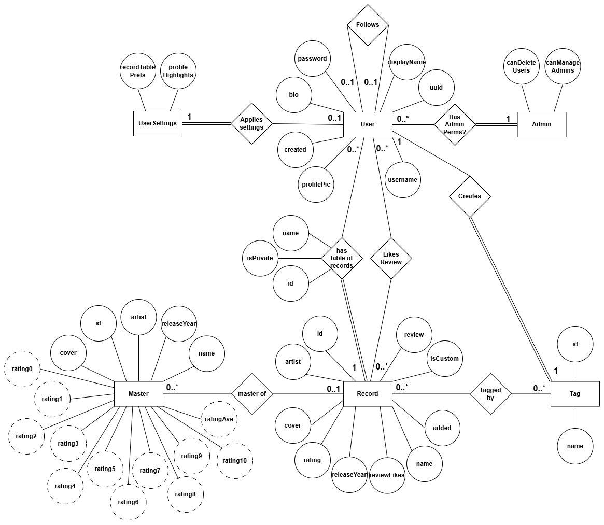
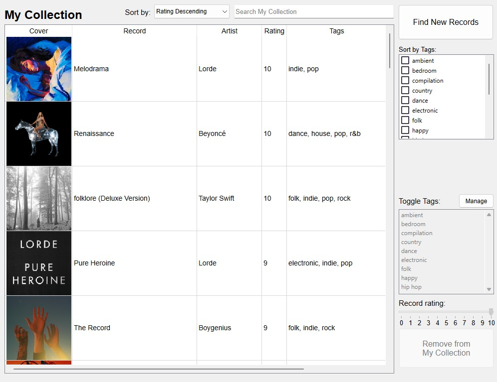
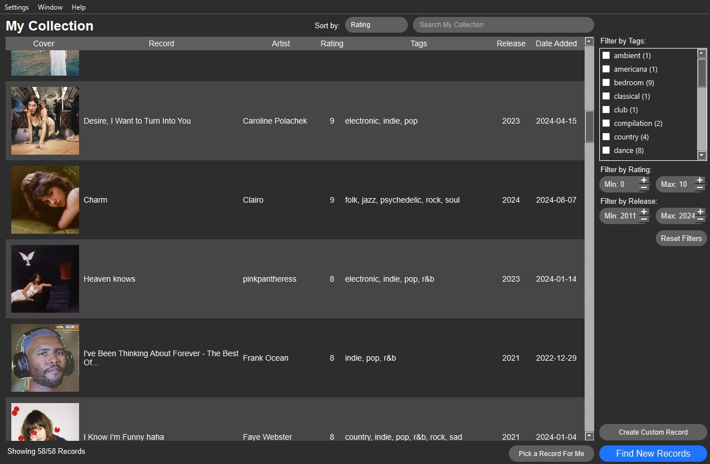

Here you can take a look at some of the projects that I have
worked on, either as personal projects or for school.
This site is also sort of a project of its own, I suppose. I started
with a template that gave me the nav/sidebar and the rest was
created by me. I made it fully responsive, so please resize your
browser to see the elements change and reorganize to fit the window
size. Also, my favourite project is
My Record Collection so don't miss it.
Time Series Prediction with Recurrent Neural Networks
With this project, I set out to create an AI model to forecast
the attendance at the campus gym.
During end of my third year, I started regularly going to the gym on
campus. I eventually learned that the staff post live attendance
updates every 30 minutes on Twitter. After initially finding it
difficult to interpret the posts as busy or not, I thought I would
write a script to scrape as much information from their tweets as
possible and graph it. With the python package I was using, I could
scrape the most recent ~800 tweets. Only able to scrape up to ~800
tweets in the past, I run the script once a month for 8 months and
accumulated
over 5000 datapoints.
Usage by Day of the Week
I referred to this dataset as my day of the week average model
because it took every data point for each day of the week and
hour and then simply averaged them together. This data helped
me pick the best day and time to go to the gym, mid-day
Sunday. Looking back, I probably could have just googled "what
day is the gym least busy?" but where's the fun in that?
Quickly, I realized I wanted to do more with the data I was
accumulating. So, for my AI 2 final project, I challenged myself to
learn about recurrent neural networks and create a long short-term
memory (LSTM) model that could perform time series prediction and
forecast how many people there would be at the gym on any given day.
It would do this by taking as input the previous five hours of
attendance readings and then predict each hour's attendance for the
rest of the day.
During my research, I discovered a previous student's attempt at
solving my problem, which they called
GyMBRo,
AKA Gym Monitoring By Robot. Clever name. Every day this bot would
post a forecast on Twitter. The issue I had with this implementation
is that it did not adjust its prediction throughout the day. I
planned to have mine do this via the inputting of five points to
make the forecast from. GyMBRo did, however, give me a good
comparison for my forecasts and an additional 7 years of attendance
data (50 000 tuples) to help with model training. Very useful
because LSTM models are known to be very dependent on large training
sets. Thanks Demetri!
Keeping things concise here on my site, I engineered my labeled
tuples to consist of 5 features: the month (1-12), the week (0-52),
the day (1-31), the hour (0-23), and the day of the week (0-6). The
label was the number of people in the weight room. This label would
also be a feature when used for making the next prediction. I also
added tuples for when the gym was closed. After feature engineering,
I separated 80% of the days for training, 10% for validation, and
the remaining 10% for testing. I then used PyTorch to train my LSTM
model. I tried several different hyperparameter tunings and trained
100 epochs for each variation of hyperparameters, saving the one
with the best mean squared error (MSE) on the validation set. I
ended up creating a model with a test MSE of 541.6. This is
noticeably better than the MSE of my simple day of the week average
model, which had a MSE of 752.2 on the same dataset. For more
in-depth background information, methodology, results, and
conclusions of my research, find my
full report here.
Hyperparameter Tuning
This chart shows different hyperparameter combinations during
training. The column in light green shows the best combination
I found. Each other column has a grey value that differs from
the best combination. The validation and test mean squared
error for each combination at the bottom is colour coded as
green (best) to red (worst). Root mean squared error is also
included.
After concluding my research, I learned lots about what it takes to
create an AI model, the necessary steps needed to format training
and testing data, and how to communicate my findings. Ultimately, I
considered my model a success. It preformed better than my previous
attempts of forecasting by averaging days' data, and, often, I found
the model to preform better the GyMBRo model. I did not find the
model's performance at forecasting from the start of the day to be
very accurate. I think the model could be improved by adding more
features, specifically for upcoming holidays and open/closed hours.
As well, perhaps combining two models for a forecast would be
beneficial. Using a different architecture to make a morning
forecast could counteract the underestimating morning problem.
Animated Forecast for April 18, 2023
This is an animation of many hourly forecasts for April 18,
2023 throughout the day. The red line shows the prediction
made by the model for the remainder of the day based on the
5-hour long input sequence in blue. The green line shows the
actual attendance reported by Rec Centre staff. The red
prediction line should, in theory, match up or be very close
to the green line. Additionally, the MSE can also be seen for
each prediction at the top.
Forecasting App
With the
online forecasting app, you can enter any date and 5 data points to create a
forecast without needing to download and run the model on your
own machine. When you click Generate Forecast, the app will
send a request to a Google Cloud compute instance running a
python flask server with the LSTM model ready to handle the
request. (Your first forecast may be slower to generate)
Using knowledge I gained in and outside of class, I solved a problem
I found myself facing when I wanted to listen to music; I could not
decide what record from my vinyl collection I was in the mood to
hear. I found my collection of only around 70 records to be quite
daunting to pick from. So much so that sometimes I would skip trying
to play a record altogether. What I wished for was an app where I
could see all my records easily and sort them by their genres and
other attributes I wanted for them.
I solved my problem by creating My Record Collection v1, but after
using it for a while, I realized that I wanted something better. I
wanted to improve the user experience, connect it to a backend
server, add more features, and make the app more visually appealing.
Feeling a bit limited with Qt, I decided to completely rebuild the
app using React and TypeScript with the MUI library, allowing for a
more dynamic, responsive, and attractive user interface that could
be used across devices. I also wanted to integrate a backend using
Node.js and Express, with a MySQL database to store user data and
records. With that goal, I created
My Record Collection v2.

Database ER Diagram
This is the ER diagram I created to plan out the database for
the app. It shows the different tables and their relationships
to each other.
Collection and Masters
This is the updated collection view with an improved layout
and a familiar MUI design. It allows for completly
customizable and fast filtering, sorting, and searching. Users
can search and add records to add to one of their collections
from the Last.FM database with custom tags, ratings, and
reviews. They can also see what other users have rated and
reviewed the record.
After recreating the basic functions from the first version of the
app (adding, editing, filtering, and sorting records, suggested tags
for records, and importing Discogs collections), I focused on
improving the user experience and developing new features. I knew I
wanted a wishlist feature, as I often found myself wanting to keep
track of albums I wanted to buy in the future in one place. I also
knew I wanted to add public profiles, because now that the app was
web-based, I wanted to be able to share my collection and see the
collections of my friends. These new features snowballed into even
more new features, I definately understand scope creep quite a bit
better now. I created a feed to see recent friend activity, users
can create their own lists of record to share and like others'
lists, and each user has statistics constantly kept up-to-date in
the backend that tracks the genre makeup of their records and the
average rating of each genre. User's can view their own stats and
compare their collection and stats with others.
Social Features
This is what the social features of MRC2 look like. Users can
create their profile, showoff their favourite records and what
they are currently enjoying, see recent activity from their
friends, create, share, and like lists of records, and compare
their collection statistics with others.
My Record Collection v1
My Record Collection v1
was my first major personal project. I had just finished CS3307:
Objected-Oriented Design and Analysis, where we were tasked to come
up with our own idea for a software and make it with C++. We came
across the Qt framework and used it to make an crude music player
with playlists and a queue. With this new knowledge, I set out to
solve my problem by using Qt during reading week. I had a rough idea
of what I wanted it to do. It should be able to search and find any
record (using an API), save the record to a collection with user
defined tags and ratings, and the user should be able to sort the
collection by those tags and ratings.

MRC 1.0.0
This is the first (mostly) working version of what I created.
It got the basics of what I wanted it to be able to do down.
Adding record, tags, and ratings. I found myself actually
wanting to use the app to pick what to listen to and I even
started listening to my records more. I considered it a
success.
Over the course of about half a year I continued to make incremental
updates to the app with feedback from friends that saw and used the
app, and of course adding things I wanted from the app. Below are
features I added with each minor version increment.
v1.1.0
Suggested tags from genres on Wikipedia
Themes (dark and light)
Record counter
v1.2.0
Import Discogs collection (multi-threaded)
Saved preferences
Checkmarks in tag menus
Delete all records and tags
Reset filters
Pick a record for me
About and contact info
v1.3.0
Edit record attributes
Create a custom record
Progress bar for Discogs import
Tag count in filter list
Export data
Filter by rating
v1.4.0
Added "Released" and "Date Added" attributes
Resizable window
Hide columns from record table
After v1.4.0, I felt like I was mostly "done" so I spent some time
figuring out how to compile the app on a Mac so I could give my Mac
user friends a version they could use. Plus, I made some minor
adjustments here and there that I wanted that didn't feel major. I
made some performance improvements through increased multithreading
and I added an album cover loading animation, among other bug fixes
and improvements.

MRC 1.4.5
MRC 1.4.5 is the final version of the desktop app. I quite
like it and I found it to be a great proof of concept. I often
used it and I always kept my collection up-to-date. It can be
found
here
. Just download source code and run the precompiled app in the
"My Record Collection-xxx" folder.
Service Registry
For the class project of CS4471: Requirement Analysis in my fourth
year, my group was tasked with creating a microservice-based system
that would operate in a cloud environment. For this project, we were
required to create a service registry that manages service
registrations and maintains an inventory of available services, a
service consumer (a front-end application) that enables users to
discover registered services through a GUI, and multiple services
designed as loosely coupled and independently deployable
microservices capable of communicate with the registry through HTTP,
AMQP, or gRPC. You can view the
project description here.
We decided to code our registry with Node.JS, use MySQL for its
database, AWS for cloud hosting, and HTTP requests to enable
communication between the registry and services. We then had to
identify functional, quality, and architecturally significant
requirements (ASRs) of the registry and each service to guide our
approach in developing the system's architecture. I was assigned to
create the architecture diagrams, identify ASRs, and implement the
registry and the first two microservices. As part of my
implementation, I provided a Node.JS file to help my groupmates
easily connect their services to the registry.
Find our full final report here
and
the implementation code here.
Overall System Architecture
Our system architecture consisted of three modules: one for
the microservices, one for the registry, and one for the
registry database. The microservice modules would be able to
send heartbeats to the registry every 15 seconds, letting it
know the microservice remained available, send register or
deregister requests to the registry, and provide a unique
function for the user.
For the backend the registry processed those POST requests
made by the microservices and ensured the database remained up
to date. If it did not receive a heartbeat from a microservice
for 35 seconds, it would mark the microservice as unavailable.
For the front end, the registry provided a GUI for users as a
webpage along with another method to fetch the currently
registered microservices. The webpage would use this
information to update its list every few seconds.
The final module, the database, was implemented with MySQL and
stored all necessary information about each registered
microservice, such as the ID, name, URL, status, and timestamp
of the last heartbeat.
Context Diagram
Component Diagram
A Couple More Diagrams
The first diagram illustrates the context in which the
architecture would be deployed.
The second diagram is a component-and-connector diagram,
showing how the modules of the architecture interact, which
modules provide interfaces, and which require them.
Demo
Finally, here is a quick demo of the implementation of the
architecture running locally. I unfortunately only have
microservice 1 and 2 on my repository; the other 3 are
managed by my groupmates.
The registry's console can be seen below its GUI. You can
see the registry and services performing as specified, with
registration, deregistration, and heartbeats being sent from
service to registry accordingly.
Demo
Finally, here is a quick demo of the implementation of the
architecture running locally. I unfortunately only have
microservice 1 and 2 on my repository; the other 3 are
managed by my groupmates.
The registry's console can be seen below its GUI. You can
see the registry and services performing as specified, with
registration, deregistration, and heartbeats being sent from
service to registry accordingly.
Business Website
The final project of CS2033: Multimedia & Communication II in my
fourth year required us to individually create a responsive,
interactive, informative, and attractive website for a fake business
of our choice. As you might have guessed by now, I am an avid record
collector, so I chose to make a website for a record store.
Some of the requirements for the site were as follows:
Single page
Enhanced parallax
ScrollFire
Day specific messages
CSS animation
CSS transition
Tiled background
Back to top button
At least 4 products
Form modification and validation
I learned a lot from this course and its prerequisite, lessons I
have applied to create this site showcasing myself and my projects.
For CS2212: Introduction to Software Engineering in my second year,
I participated in my first computer science group project. It was my
first experience coding on a team, requiring us to develop a unified
idea of a codebase and deal with version control collaboratively. To
stay organized, we used the Atlassian suite of software.
For the project, we needed to create a geographic information system
(GIS) covering three buildings on campus. The system needed to
include premade informational POIs on the map as well as
functionality for user-created POIs. We were required to use Java
and were encouraged to use NetBeans for its drag-and-drop UI
creator. Additionally, we wrote unit tests for the code using JUnit.
The Application
This is how our project appeared when a user selected a
user-created POI and chose to edit it. You can see on the
right all of the POI's data fields that you could change,
and below that, the current weather on campus. Additionally,
the right panel (not shown) included options to toggle
different layers of POIs and a user favorites list.
In the middle-top section, you can see a list of all
existing POIs, and below that is information about the
selected POI. On the left, you have the map, which you can
scroll around to view the entire floor.